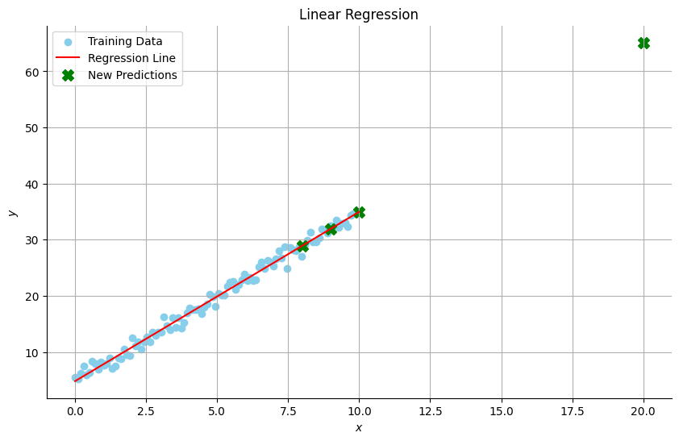
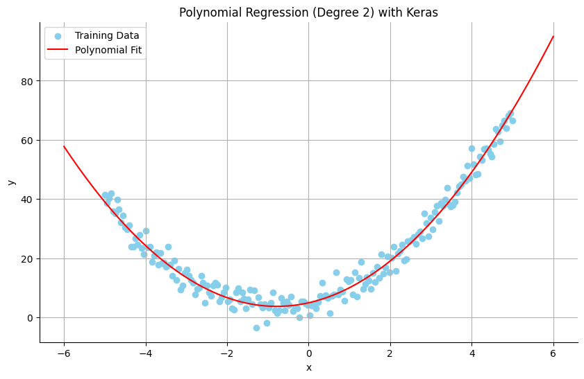
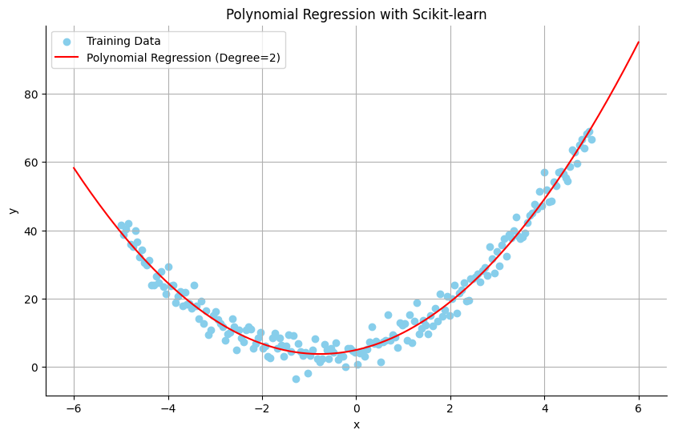

<!DOCTYPE html>


<html lang="en" data-content_root="../" >

  <head>
    <meta charset="utf-8" />
    <meta name="viewport" content="width=device-width, initial-scale=1.0" /><meta name="viewport" content="width=device-width, initial-scale=1" />

    <title>Regression Problems &#8212; A Gentle Introduction to Machine Learning</title>
  
  
  
  <script data-cfasync="false">
    document.documentElement.dataset.mode = localStorage.getItem("mode") || "";
    document.documentElement.dataset.theme = localStorage.getItem("theme") || "";
  </script>
  <!--
    this give us a css class that will be invisible only if js is disabled
  -->
  <noscript>
    <style>
      .pst-js-only { display: none !important; }

    </style>
  </noscript>
  
  <!-- Loaded before other Sphinx assets -->
  <link href="../_static/styles/theme.css?digest=8878045cc6db502f8baf" rel="stylesheet" />
<link href="../_static/styles/pydata-sphinx-theme.css?digest=8878045cc6db502f8baf" rel="stylesheet" />

    <link rel="stylesheet" type="text/css" href="../_static/pygments.css?v=fa44fd50" />
    <link rel="stylesheet" type="text/css" href="../_static/styles/sphinx-book-theme.css?v=a3416100" />
    <link rel="stylesheet" type="text/css" href="../_static/togglebutton.css?v=13237357" />
    <link rel="stylesheet" type="text/css" href="../_static/copybutton.css?v=76b2166b" />
    <link rel="stylesheet" type="text/css" href="../_static/mystnb.4510f1fc1dee50b3e5859aac5469c37c29e427902b24a333a5f9fcb2f0b3ac41.css" />
    <link rel="stylesheet" type="text/css" href="../_static/sphinx-thebe.css?v=4fa983c6" />
    <link rel="stylesheet" type="text/css" href="../_static/sphinx-design.min.css?v=95c83b7e" />
  
  <!-- So that users can add custom icons -->
  <script src="../_static/scripts/fontawesome.js?digest=8878045cc6db502f8baf"></script>
  <!-- Pre-loaded scripts that we'll load fully later -->
  <link rel="preload" as="script" href="../_static/scripts/bootstrap.js?digest=8878045cc6db502f8baf" />
<link rel="preload" as="script" href="../_static/scripts/pydata-sphinx-theme.js?digest=8878045cc6db502f8baf" />

    <script src="../_static/documentation_options.js?v=9eb32ce0"></script>
    <script src="../_static/doctools.js?v=9a2dae69"></script>
    <script src="../_static/sphinx_highlight.js?v=dc90522c"></script>
    <script src="../_static/clipboard.min.js?v=a7894cd8"></script>
    <script src="../_static/copybutton.js?v=f281be69"></script>
    <script src="../_static/scripts/sphinx-book-theme.js?v=887ef09a"></script>
    <script>let toggleHintShow = 'Click to show';</script>
    <script>let toggleHintHide = 'Click to hide';</script>
    <script>let toggleOpenOnPrint = 'true';</script>
    <script src="../_static/togglebutton.js?v=4a39c7ea"></script>
    <script>var togglebuttonSelector = '.toggle, .admonition.dropdown';</script>
    <script src="../_static/design-tabs.js?v=f930bc37"></script>
    <script>const THEBE_JS_URL = "https://unpkg.com/thebe@0.8.2/lib/index.js"; const thebe_selector = ".thebe,.cell"; const thebe_selector_input = "pre"; const thebe_selector_output = ".output, .cell_output"</script>
    <script async="async" src="../_static/sphinx-thebe.js?v=c100c467"></script>
    <script>var togglebuttonSelector = '.toggle, .admonition.dropdown';</script>
    <script>const THEBE_JS_URL = "https://unpkg.com/thebe@0.8.2/lib/index.js"; const thebe_selector = ".thebe,.cell"; const thebe_selector_input = "pre"; const thebe_selector_output = ".output, .cell_output"</script>
    <script>window.MathJax = {"options": {"processHtmlClass": "tex2jax_process|mathjax_process|math|output_area"}}</script>
    <script defer="defer" src="https://cdn.jsdelivr.net/npm/mathjax@3/es5/tex-mml-chtml.js"></script>
    <script>DOCUMENTATION_OPTIONS.pagename = 'regression/introduction-regression';</script>
    <link rel="index" title="Index" href="../genindex.html" />
    <link rel="search" title="Search" href="../search.html" />
    <link rel="next" title="Example: Predicting House Prices" href="example-predicting-house-prices.html" />
    <link rel="prev" title="Midterm Project" href="../tutorials/midterm_notebook.html" />
  <meta name="viewport" content="width=device-width, initial-scale=1"/>
  <meta name="docsearch:language" content="en"/>
  <meta name="docsearch:version" content="" />
  </head>
  
  
  <body data-bs-spy="scroll" data-bs-target=".bd-toc-nav" data-offset="180" data-bs-root-margin="0px 0px -60%" data-default-mode="">

  
  
  <div id="pst-skip-link" class="skip-link d-print-none"><a href="#main-content">Skip to main content</a></div>
  
  <div id="pst-scroll-pixel-helper"></div>
  
  <button type="button" class="btn rounded-pill" id="pst-back-to-top">
    <i class="fa-solid fa-arrow-up"></i>Back to top</button>

  
  <dialog id="pst-search-dialog">
    
<form class="bd-search d-flex align-items-center"
      action="../search.html"
      method="get">
  <i class="fa-solid fa-magnifying-glass"></i>
  <input type="search"
         class="form-control"
         name="q"
         placeholder="Search this book..."
         aria-label="Search this book..."
         autocomplete="off"
         autocorrect="off"
         autocapitalize="off"
         spellcheck="false"/>
  <span class="search-button__kbd-shortcut"><kbd class="kbd-shortcut__modifier">Ctrl</kbd>+<kbd>K</kbd></span>
</form>
  </dialog>

  <div class="pst-async-banner-revealer d-none">
  <aside id="bd-header-version-warning" class="d-none d-print-none" aria-label="Version warning"></aside>
</div>

  
    <header class="bd-header navbar navbar-expand-lg bd-navbar d-print-none">
    </header>
  

  <div class="bd-container">
    <div class="bd-container__inner bd-page-width">
      
      
      
      <dialog id="pst-primary-sidebar-modal"></dialog>
      <div id="pst-primary-sidebar" class="bd-sidebar-primary bd-sidebar">
        

  
  <div class="sidebar-header-items sidebar-primary__section">
    
    
    
    
  </div>
  
    <div class="sidebar-primary-items__start sidebar-primary__section">
        <div class="sidebar-primary-item">

  
    
  

<a class="navbar-brand logo" href="../overview.html">
  
  
  
  
  
  
    <p class="title logo__title">A Gentle Introduction to Machine Learning</p>
  
</a></div>
        <div class="sidebar-primary-item">

<button class="btn search-button-field search-button__button pst-js-only" title="Search" aria-label="Search" data-bs-placement="bottom" data-bs-toggle="tooltip">
 <i class="fa-solid fa-magnifying-glass"></i>
 <span class="search-button__default-text">Search</span>
 <span class="search-button__kbd-shortcut"><kbd class="kbd-shortcut__modifier">Ctrl</kbd>+<kbd class="kbd-shortcut__modifier">K</kbd></span>
</button></div>
        <div class="sidebar-primary-item"><nav class="bd-links bd-docs-nav" aria-label="Main">
    <div class="bd-toc-item navbar-nav active">
        
        <ul class="nav bd-sidenav bd-sidenav__home-link">
            <li class="toctree-l1">
                <a class="reference internal" href="../overview.html">
                    Course Overview
                </a>
            </li>
        </ul>
        <p aria-level="2" class="caption" role="heading"><span class="caption-text">Getting Started</span></p>
<ul class="nav bd-sidenav">
<li class="toctree-l1"><a class="reference internal" href="../getting-started/installation.html">Installation</a></li>
<li class="toctree-l1"><a class="reference internal" href="../getting-started/jupyter.html">Jupyter Notebooks</a></li>
<li class="toctree-l1"><a class="reference internal" href="../getting-started/colab.html">Colab</a></li>
<li class="toctree-l1"><a class="reference internal" href="../getting-started/github.html">GitHub</a></li>
</ul>
<p aria-level="2" class="caption" role="heading"><span class="caption-text">Crash Course in Python</span></p>
<ul class="nav bd-sidenav">
<li class="toctree-l1"><a class="reference internal" href="../crash-course-python/overview.html">Overview</a></li>
<li class="toctree-l1"><a class="reference internal" href="../crash-course-python/python-essentials.html">Python Essentials</a></li>
<li class="toctree-l1"><a class="reference internal" href="../tutorials/tutorial1.html">Tutorial 1: Introduction to Python</a></li>
<li class="toctree-l1"><a class="reference internal" href="../tutorials/tutorial2.html">Tutorial 2: Reading CSV files</a></li>


<li class="toctree-l1"><a class="reference internal" href="../tutorials/tutorial3.html">Tutorial 3: Brief Introduction to Pandas</a></li>
<li class="toctree-l1"><a class="reference internal" href="../crash-course-python/pitfalls.html">Thinking in Python: Key Concepts and Pitfalls</a></li>
<li class="toctree-l1"><a class="reference internal" href="../crash-course-python/classes.html">Classes</a></li>
</ul>
<p aria-level="2" class="caption" role="heading"><span class="caption-text">First Steps in Machine Learning</span></p>
<ul class="nav bd-sidenav">
<li class="toctree-l1"><a class="reference internal" href="../first-steps/intro-numpy.html">A Brief Introduction to Numpy</a></li>

<li class="toctree-l1"><a class="reference internal" href="../tutorials/tutorial4.html">Tutorial 4</a></li>
<li class="toctree-l1"><a class="reference internal" href="../first-steps/linear-classification.html">Introduction to Linear Classification</a></li>
<li class="toctree-l1"><a class="reference internal" href="../first-steps/linear-classification-algorithms.html">Finding a Decision Boundary</a></li>
<li class="toctree-l1"><a class="reference internal" href="../tutorials/tutorial5.html">Tutorial 5: Linear Classifiers</a></li>
<li class="toctree-l1"><a class="reference internal" href="../first-steps/gradient-descent.html">Gradient Descent</a></li>
</ul>
<p aria-level="2" class="caption" role="heading"><span class="caption-text">Classification</span></p>
<ul class="nav bd-sidenav">
<li class="toctree-l1"><a class="reference internal" href="../classification/beyond-linear-classification.html">Beyond Linear Classification</a></li>
<li class="toctree-l1"><a class="reference internal" href="../classification/binary-cross-entropy.html">Loss Functions for Binary Classification</a></li>
<li class="toctree-l1"><a class="reference internal" href="../classification/example-classifying-reviews.html">Example: Classifying Movie Reviews</a></li>
<li class="toctree-l1"><a class="reference internal" href="../classification/example-multiclass-classification.html">Example: Multiclass Classification Problem</a></li>
<li class="toctree-l1"><a class="reference internal" href="../classification/example-classifying-digits.html">Example: Classifying Digits</a></li>
<li class="toctree-l1"><a class="reference internal" href="../tutorials/midterm_notebook.html">Midterm Project</a></li>
</ul>
<p aria-level="2" class="caption" role="heading"><span class="caption-text">Regression</span></p>
<ul class="current nav bd-sidenav">
<li class="toctree-l1 current active"><a class="current reference internal" href="#">Regression Problems</a></li>
<li class="toctree-l1"><a class="reference internal" href="example-predicting-house-prices.html">Example: Predicting House Prices</a></li>
</ul>
<p aria-level="2" class="caption" role="heading"><span class="caption-text">Image Classification</span></p>
<ul class="nav bd-sidenav">
<li class="toctree-l1"><a class="reference internal" href="../image-classification/introduction-convnet.html">Convnets - Convolutional Neural Networks</a></li>
<li class="toctree-l1"><a class="reference internal" href="../image-classification/example-classifying-dogs-vs-cats.html">Example: Classifying Images - Dogs vs. Cats</a></li>
<li class="toctree-l1"><a class="reference internal" href="../image-classification/feature-extraction.html">Using Pretrained Models</a></li>
<li class="toctree-l1"><a class="reference internal" href="../tutorials/tutorial6_release.html">Tutorial 6: CIFAR-10 CNN Assignment</a></li>
</ul>
<p aria-level="2" class="caption" role="heading"><span class="caption-text">Topics in Machine Learning</span></p>
<ul class="nav bd-sidenav">
<li class="toctree-l1"><a class="reference internal" href="../topics-machine-learning/overfitting.html">Overfitting</a></li>
<li class="toctree-l1"><a class="reference internal" href="../topics-machine-learning/gpu-vs-cpu.html">GPU vs. CPU</a></li>
</ul>
<p aria-level="2" class="caption" role="heading"><span class="caption-text">Natural Language Processing</span></p>
<ul class="nav bd-sidenav">
<li class="toctree-l1"><a class="reference internal" href="../text-processing/word-embedding.html">Encoding Text</a></li>
<li class="toctree-l1"><a class="reference internal" href="../text-processing/introduction-rnn.html">Recurrent Neural Networks (RNNs)</a></li>
<li class="toctree-l1"><a class="reference internal" href="../text-processing/intro-processing-text.html">Encoding Text</a></li>
<li class="toctree-l1"><a class="reference internal" href="../text-processing/intro-processing-text-word-embeddings.html">Encoding Text - Using Predefined Word Embeddings</a></li>
<li class="toctree-l1"><a class="reference internal" href="../tutorials/tutorial7_release.html">Tutorial 7: Part-of-speech tagging with RNNs</a></li>


</ul>
<p aria-level="2" class="caption" role="heading"><span class="caption-text">Introduction to Transformers</span></p>
<ul class="nav bd-sidenav">
<li class="toctree-l1"><a class="reference internal" href="../introduciton-transformers/intro-self-attention.html">A First Look at Self-Attention</a></li>
<li class="toctree-l1"><a class="reference internal" href="../introduciton-transformers/mini-gpt.html">Mini GPT</a></li>
</ul>

    </div>
</nav></div>
    </div>
  
  
  <div class="sidebar-primary-items__end sidebar-primary__section">
      <div class="sidebar-primary-item">
<div id="ethical-ad-placement"
      class="flat"
      data-ea-publisher="readthedocs"
      data-ea-type="readthedocs-sidebar"
      data-ea-manual="true">
</div></div>
  </div>


      </div>
      
      <main id="main-content" class="bd-main" role="main">
        
        

<div class="sbt-scroll-pixel-helper"></div>

          <div class="bd-content">
            <div class="bd-article-container">
              
              <div class="bd-header-article d-print-none">
<div class="header-article-items header-article__inner">
  
    <div class="header-article-items__start">
      
        <div class="header-article-item"><button class="sidebar-toggle primary-toggle btn btn-sm" title="Toggle primary sidebar" data-bs-placement="bottom" data-bs-toggle="tooltip">
  <span class="fa-solid fa-bars"></span>
</button></div>
      
    </div>
  
  
    <div class="header-article-items__end">
      
        <div class="header-article-item">

<div class="article-header-buttons">


<div class="dropdown dropdown-source-buttons">
  <button class="btn dropdown-toggle" type="button" data-bs-toggle="dropdown" aria-expanded="false" aria-label="Source repositories">
    <i class="fab fa-github"></i>
  </button>
  <ul class="dropdown-menu">
      
      
      
      <li><a href="https://github.com/epacuit/introduction-machine-learning" target="_blank"
   class="btn btn-sm btn-source-repository-button dropdown-item"
   title="Source repository"
   data-bs-placement="left" data-bs-toggle="tooltip"
>
  

<span class="btn__icon-container">
  <i class="fab fa-github"></i>
  </span>
<span class="btn__text-container">Repository</span>
</a>
</li>
      
      
      
      
      <li><a href="https://github.com/epacuit/introduction-machine-learning/issues/new?title=Issue%20on%20page%20%2Fregression/introduction-regression.html&body=Your%20issue%20content%20here." target="_blank"
   class="btn btn-sm btn-source-issues-button dropdown-item"
   title="Open an issue"
   data-bs-placement="left" data-bs-toggle="tooltip"
>
  

<span class="btn__icon-container">
  <i class="fas fa-lightbulb"></i>
  </span>
<span class="btn__text-container">Open issue</span>
</a>
</li>
      
  </ul>
</div>


<div class="dropdown dropdown-download-buttons">
  <button class="btn dropdown-toggle" type="button" data-bs-toggle="dropdown" aria-expanded="false" aria-label="Download this page">
    <i class="fas fa-download"></i>
  </button>
  <ul class="dropdown-menu">
      
      
      
      <li><a href="../_sources/regression/introduction-regression.ipynb" target="_blank"
   class="btn btn-sm btn-download-source-button dropdown-item"
   title="Download source file"
   data-bs-placement="left" data-bs-toggle="tooltip"
>
  

<span class="btn__icon-container">
  <i class="fas fa-file"></i>
  </span>
<span class="btn__text-container">.ipynb</span>
</a>
</li>
      
      
      
      
      <li>
<button onclick="window.print()"
  class="btn btn-sm btn-download-pdf-button dropdown-item"
  title="Print to PDF"
  data-bs-placement="left" data-bs-toggle="tooltip"
>
  

<span class="btn__icon-container">
  <i class="fas fa-file-pdf"></i>
  </span>
<span class="btn__text-container">.pdf</span>
</button>
</li>
      
  </ul>
</div>


<button onclick="toggleFullScreen()"
  class="btn btn-sm btn-fullscreen-button"
  title="Fullscreen mode"
  data-bs-placement="bottom" data-bs-toggle="tooltip"
>
  

<span class="btn__icon-container">
  <i class="fas fa-expand"></i>
  </span>

</button>


<button class="btn btn-sm nav-link pst-navbar-icon theme-switch-button pst-js-only" aria-label="Color mode" data-bs-title="Color mode"  data-bs-placement="bottom" data-bs-toggle="tooltip">
  <i class="theme-switch fa-solid fa-sun                fa-lg" data-mode="light" title="Light"></i>
  <i class="theme-switch fa-solid fa-moon               fa-lg" data-mode="dark"  title="Dark"></i>
  <i class="theme-switch fa-solid fa-circle-half-stroke fa-lg" data-mode="auto"  title="System Settings"></i>
</button>


<button class="btn btn-sm pst-navbar-icon search-button search-button__button pst-js-only" title="Search" aria-label="Search" data-bs-placement="bottom" data-bs-toggle="tooltip">
    <i class="fa-solid fa-magnifying-glass fa-lg"></i>
</button>
<button class="sidebar-toggle secondary-toggle btn btn-sm" title="Toggle secondary sidebar" data-bs-placement="bottom" data-bs-toggle="tooltip">
    <span class="fa-solid fa-list"></span>
</button>
</div></div>
      
    </div>
  
</div>
</div>
              
              

<div id="jb-print-docs-body" class="onlyprint">
    <h1>Regression Problems</h1>
    <!-- Table of contents -->
    <div id="print-main-content">
        <div id="jb-print-toc">
            
            <div>
                <h2> Contents </h2>
            </div>
            <nav aria-label="Page">
                <ul class="visible nav section-nav flex-column">
<li class="toc-h2 nav-item toc-entry"><a class="reference internal nav-link" href="#common-regression-algorithms-include">Common regression algorithms include:</a></li>
<li class="toc-h2 nav-item toc-entry"><a class="reference internal nav-link" href="#evaluating-regression-models">Evaluating regression models:</a></li>
<li class="toc-h2 nav-item toc-entry"><a class="reference internal nav-link" href="#example-of-a-linear-regression-problem">Example of a Linear Regression Problem</a></li>
<li class="toc-h2 nav-item toc-entry"><a class="reference internal nav-link" href="#polynomial-regression">Polynomial Regression</a></li>
</ul>
            </nav>
        </div>
    </div>
</div>

              
                
<div id="searchbox"></div>
                <article class="bd-article">
                  
  <p><a target="_blank" rel="noopener noreferrer" href="https://colab.research.google.com/github/epacuit/introduction-machine-learning/blob/main/regression/introduction-regression.ipynb"></a></p>
<section class="tex2jax_ignore mathjax_ignore" id="regression-problems">
<span id="regression"></span><h1>Regression Problems<a class="headerlink" href="#regression-problems" title="Link to this heading">#</a></h1>
<p><strong>Regression</strong> is a type of supervised machine learning task where the goal is to predict a continuous numeric outcome (e.g., prices, height, temperature) based on given input features.</p>
<p><strong>Examples of regression problems</strong>:</p>
<ul class="simple">
<li><p>Predicting median house prices from property details.</p></li>
<li><p>Estimating a person’s salary from their years of education and experience.</p></li>
<li><p>Forecasting temperature or rainfall based on weather data.</p></li>
</ul>
<section id="common-regression-algorithms-include">
<h2>Common regression algorithms include:<a class="headerlink" href="#common-regression-algorithms-include" title="Link to this heading">#</a></h2>
<ul class="simple">
<li><p><strong>Linear Regression</strong>: Simple and interpretable, assumes a linear relationship between inputs and outputs.</p></li>
<li><p><strong>Polynomial Regression</strong>: Captures nonlinear relationships using polynomial features.</p></li>
<li><p><strong>Neural Networks (Deep Learning)</strong>: Capable of modeling complex relationships in data.</p></li>
<li><p><strong>Decision Tree and Random Forest Regressors</strong>: Good for nonlinear data, robust to outliers.</p></li>
</ul>
</section>
<section id="evaluating-regression-models">
<h2>Evaluating regression models:<a class="headerlink" href="#evaluating-regression-models" title="Link to this heading">#</a></h2>
<p>Common metrics to evaluate regression performance include:</p>
<ul class="simple">
<li><p><strong>Mean Absolute Error (MAE)</strong>: Average absolute prediction error.</p></li>
<li><p><strong>Mean Squared Error (MSE)</strong>: Average squared prediction error (penalizes large errors heavily).</p></li>
<li><p><strong>Root Mean Squared Error (RMSE)</strong>: Square root of MSE, easily interpretable in original units.</p></li>
<li><p><strong>R-squared (<span class="math notranslate nohighlight">\(R^2\)</span>)</strong>: Indicates the proportion of variance in the target explained by the model.</p></li>
</ul>
<p>In summary, regression involves predicting numeric values from input data and is fundamental for tasks requiring continuous outcomes.</p>
</section>
<section id="example-of-a-linear-regression-problem">
<h2>Example of a Linear Regression Problem<a class="headerlink" href="#example-of-a-linear-regression-problem" title="Link to this heading">#</a></h2>
<p>Linear assumes that there is a linear relationship between the input features and the output variable.</p>
<div class="cell docutils container">
<div class="cell_input docutils container">
<div class="highlight-ipython3 notranslate"><div class="highlight"><pre><span></span><span class="kn">import</span> <span class="nn">numpy</span> <span class="k">as</span> <span class="nn">np</span>

<span class="n">x</span> <span class="o">=</span> <span class="n">np</span><span class="o">.</span><span class="n">linspace</span><span class="p">(</span><span class="mi">0</span><span class="p">,</span> <span class="mi">10</span><span class="p">,</span> <span class="mi">100</span><span class="p">)</span>
<span class="nb">print</span><span class="p">(</span><span class="n">x</span><span class="p">)</span>

<span class="n">x_train</span> <span class="o">=</span> <span class="n">x</span><span class="o">.</span><span class="n">reshape</span><span class="p">(</span><span class="o">-</span><span class="mi">1</span><span class="p">,</span> <span class="mi">1</span><span class="p">)</span>
<span class="nb">print</span><span class="p">(</span><span class="n">x_train</span><span class="p">)</span>
</pre></div>
</div>
</div>
<div class="cell_output docutils container">
<div class="output stream highlight-myst-ansi notranslate"><div class="highlight"><pre><span></span>[ 0.          0.1010101   0.2020202   0.3030303   0.4040404   0.50505051
  0.60606061  0.70707071  0.80808081  0.90909091  1.01010101  1.11111111
  1.21212121  1.31313131  1.41414141  1.51515152  1.61616162  1.71717172
  1.81818182  1.91919192  2.02020202  2.12121212  2.22222222  2.32323232
  2.42424242  2.52525253  2.62626263  2.72727273  2.82828283  2.92929293
  3.03030303  3.13131313  3.23232323  3.33333333  3.43434343  3.53535354
  3.63636364  3.73737374  3.83838384  3.93939394  4.04040404  4.14141414
  4.24242424  4.34343434  4.44444444  4.54545455  4.64646465  4.74747475
  4.84848485  4.94949495  5.05050505  5.15151515  5.25252525  5.35353535
  5.45454545  5.55555556  5.65656566  5.75757576  5.85858586  5.95959596
  6.06060606  6.16161616  6.26262626  6.36363636  6.46464646  6.56565657
  6.66666667  6.76767677  6.86868687  6.96969697  7.07070707  7.17171717
  7.27272727  7.37373737  7.47474747  7.57575758  7.67676768  7.77777778
  7.87878788  7.97979798  8.08080808  8.18181818  8.28282828  8.38383838
  8.48484848  8.58585859  8.68686869  8.78787879  8.88888889  8.98989899
  9.09090909  9.19191919  9.29292929  9.39393939  9.49494949  9.5959596
  9.6969697   9.7979798   9.8989899  10.        ]
[[ 0.        ]
 [ 0.1010101 ]
 [ 0.2020202 ]
 [ 0.3030303 ]
 [ 0.4040404 ]
 [ 0.50505051]
 [ 0.60606061]
 [ 0.70707071]
 [ 0.80808081]
 [ 0.90909091]
 [ 1.01010101]
 [ 1.11111111]
 [ 1.21212121]
 [ 1.31313131]
 [ 1.41414141]
 [ 1.51515152]
 [ 1.61616162]
 [ 1.71717172]
 [ 1.81818182]
 [ 1.91919192]
 [ 2.02020202]
 [ 2.12121212]
 [ 2.22222222]
 [ 2.32323232]
 [ 2.42424242]
 [ 2.52525253]
 [ 2.62626263]
 [ 2.72727273]
 [ 2.82828283]
 [ 2.92929293]
 [ 3.03030303]
 [ 3.13131313]
 [ 3.23232323]
 [ 3.33333333]
 [ 3.43434343]
 [ 3.53535354]
 [ 3.63636364]
 [ 3.73737374]
 [ 3.83838384]
 [ 3.93939394]
 [ 4.04040404]
 [ 4.14141414]
 [ 4.24242424]
 [ 4.34343434]
 [ 4.44444444]
 [ 4.54545455]
 [ 4.64646465]
 [ 4.74747475]
 [ 4.84848485]
 [ 4.94949495]
 [ 5.05050505]
 [ 5.15151515]
 [ 5.25252525]
 [ 5.35353535]
 [ 5.45454545]
 [ 5.55555556]
 [ 5.65656566]
 [ 5.75757576]
 [ 5.85858586]
 [ 5.95959596]
 [ 6.06060606]
 [ 6.16161616]
 [ 6.26262626]
 [ 6.36363636]
 [ 6.46464646]
 [ 6.56565657]
 [ 6.66666667]
 [ 6.76767677]
 [ 6.86868687]
 [ 6.96969697]
 [ 7.07070707]
 [ 7.17171717]
 [ 7.27272727]
 [ 7.37373737]
 [ 7.47474747]
 [ 7.57575758]
 [ 7.67676768]
 [ 7.77777778]
 [ 7.87878788]
 [ 7.97979798]
 [ 8.08080808]
 [ 8.18181818]
 [ 8.28282828]
 [ 8.38383838]
 [ 8.48484848]
 [ 8.58585859]
 [ 8.68686869]
 [ 8.78787879]
 [ 8.88888889]
 [ 8.98989899]
 [ 9.09090909]
 [ 9.19191919]
 [ 9.29292929]
 [ 9.39393939]
 [ 9.49494949]
 [ 9.5959596 ]
 [ 9.6969697 ]
 [ 9.7979798 ]
 [ 9.8989899 ]
 [10.        ]]
</pre></div>
</div>
</div>
</div>
<div class="cell docutils container">
<div class="cell_input docutils container">
<div class="highlight-ipython3 notranslate"><div class="highlight"><pre><span></span><span class="kn">import</span> <span class="nn">numpy</span> <span class="k">as</span> <span class="nn">np</span>
<span class="kn">import</span> <span class="nn">matplotlib.pyplot</span> <span class="k">as</span> <span class="nn">plt</span>
<span class="kn">from</span> <span class="nn">tensorflow</span> <span class="kn">import</span> <span class="n">keras</span>
<span class="kn">from</span> <span class="nn">tensorflow.keras.layers</span> <span class="kn">import</span> <span class="n">Dense</span><span class="p">,</span> <span class="n">Input</span>
<span class="kn">import</span> <span class="nn">seaborn</span> <span class="k">as</span> <span class="nn">sns</span>

<span class="c1"># Generate synthetic linear data</span>
<span class="n">np</span><span class="o">.</span><span class="n">random</span><span class="o">.</span><span class="n">seed</span><span class="p">(</span><span class="mi">42</span><span class="p">)</span>
<span class="n">x</span> <span class="o">=</span> <span class="n">np</span><span class="o">.</span><span class="n">linspace</span><span class="p">(</span><span class="mi">0</span><span class="p">,</span> <span class="mi">10</span><span class="p">,</span> <span class="mi">100</span><span class="p">)</span>
<span class="n">y</span> <span class="o">=</span> <span class="mi">3</span> <span class="o">*</span> <span class="n">x</span> <span class="o">+</span> <span class="mi">5</span> <span class="o">+</span> <span class="n">np</span><span class="o">.</span><span class="n">random</span><span class="o">.</span><span class="n">randn</span><span class="p">(</span><span class="mi">100</span><span class="p">)</span>

<span class="c1"># IMPORTANT: Reshape inputs for Keras</span>
<span class="n">x_train</span> <span class="o">=</span> <span class="n">x</span><span class="o">.</span><span class="n">reshape</span><span class="p">(</span><span class="o">-</span><span class="mi">1</span><span class="p">,</span> <span class="mi">1</span><span class="p">)</span>  

<span class="c1"># Define the linear model</span>
<span class="n">model</span> <span class="o">=</span> <span class="n">keras</span><span class="o">.</span><span class="n">Sequential</span><span class="p">([</span>
    <span class="n">Input</span><span class="p">(</span><span class="n">shape</span><span class="o">=</span><span class="p">(</span><span class="mi">1</span><span class="p">,)),</span>  <span class="c1"># Input layer, each sample is a single value</span>
    <span class="n">Dense</span><span class="p">(</span><span class="mi">1</span><span class="p">)</span>
<span class="p">])</span>

<span class="n">model</span><span class="o">.</span><span class="n">compile</span><span class="p">(</span><span class="n">optimizer</span><span class="o">=</span><span class="n">keras</span><span class="o">.</span><span class="n">optimizers</span><span class="o">.</span><span class="n">Adam</span><span class="p">(</span><span class="n">learning_rate</span><span class="o">=</span><span class="mf">0.05</span><span class="p">),</span> <span class="n">loss</span><span class="o">=</span><span class="s1">&#39;mse&#39;</span><span class="p">,</span> <span class="n">metrics</span><span class="o">=</span><span class="p">[</span><span class="s1">&#39;mae&#39;</span><span class="p">])</span>

<span class="c1"># Train longer to ensure convergence</span>
<span class="n">history</span> <span class="o">=</span> <span class="n">model</span><span class="o">.</span><span class="n">fit</span><span class="p">(</span><span class="n">x_train</span><span class="p">,</span> <span class="n">y</span><span class="p">,</span> <span class="n">epochs</span><span class="o">=</span><span class="mi">200</span><span class="p">,</span> <span class="n">verbose</span><span class="o">=</span><span class="mi">0</span><span class="p">)</span>

<span class="c1"># Predictions for the regression line</span>
<span class="n">x_line</span> <span class="o">=</span> <span class="n">np</span><span class="o">.</span><span class="n">linspace</span><span class="p">(</span><span class="mi">0</span><span class="p">,</span> <span class="mi">10</span><span class="p">,</span> <span class="mi">100</span><span class="p">)</span>
<span class="n">y_line</span> <span class="o">=</span> <span class="n">model</span><span class="o">.</span><span class="n">predict</span><span class="p">(</span><span class="n">x_line</span><span class="o">.</span><span class="n">reshape</span><span class="p">(</span><span class="o">-</span><span class="mi">1</span><span class="p">,</span> <span class="mi">1</span><span class="p">))</span>

<span class="c1"># New predictions within training range</span>
<span class="n">x_new</span> <span class="o">=</span> <span class="n">np</span><span class="o">.</span><span class="n">array</span><span class="p">([</span><span class="mi">8</span><span class="p">,</span> <span class="mi">9</span><span class="p">,</span> <span class="mi">10</span><span class="p">,</span> <span class="mi">20</span><span class="p">])</span><span class="o">.</span><span class="n">reshape</span><span class="p">(</span><span class="o">-</span><span class="mi">1</span><span class="p">,</span> <span class="mi">1</span><span class="p">)</span>
<span class="n">y_new_pred</span> <span class="o">=</span> <span class="n">model</span><span class="o">.</span><span class="n">predict</span><span class="p">(</span><span class="n">x_new</span><span class="p">)</span>

<span class="c1"># Plotting clearly shows correct fitting</span>
<span class="n">plt</span><span class="o">.</span><span class="n">figure</span><span class="p">(</span><span class="n">figsize</span><span class="o">=</span><span class="p">(</span><span class="mi">10</span><span class="p">,</span><span class="mi">6</span><span class="p">))</span>
<span class="n">plt</span><span class="o">.</span><span class="n">scatter</span><span class="p">(</span><span class="n">x</span><span class="p">,</span> <span class="n">y</span><span class="p">,</span> <span class="n">label</span><span class="o">=</span><span class="s1">&#39;Training Data&#39;</span><span class="p">,</span> <span class="n">color</span><span class="o">=</span><span class="s1">&#39;skyblue&#39;</span><span class="p">)</span>
<span class="n">plt</span><span class="o">.</span><span class="n">plot</span><span class="p">(</span><span class="n">x_line</span><span class="p">,</span> <span class="n">y_line</span><span class="p">,</span> <span class="n">label</span><span class="o">=</span><span class="s1">&#39;Regression Line&#39;</span><span class="p">,</span> <span class="n">color</span><span class="o">=</span><span class="s1">&#39;red&#39;</span><span class="p">)</span>
<span class="n">plt</span><span class="o">.</span><span class="n">scatter</span><span class="p">(</span><span class="n">x_new</span><span class="p">,</span> <span class="n">y_new_pred</span><span class="p">,</span> <span class="n">label</span><span class="o">=</span><span class="s1">&#39;New Predictions&#39;</span><span class="p">,</span> <span class="n">color</span><span class="o">=</span><span class="s1">&#39;green&#39;</span><span class="p">,</span> <span class="n">s</span><span class="o">=</span><span class="mi">100</span><span class="p">,</span> <span class="n">marker</span><span class="o">=</span><span class="s1">&#39;X&#39;</span><span class="p">)</span>
<span class="n">plt</span><span class="o">.</span><span class="n">xlabel</span><span class="p">(</span><span class="s1">&#39;$x$&#39;</span><span class="p">)</span>
<span class="n">plt</span><span class="o">.</span><span class="n">ylabel</span><span class="p">(</span><span class="s1">&#39;$y$&#39;</span><span class="p">)</span>
<span class="n">plt</span><span class="o">.</span><span class="n">title</span><span class="p">(</span><span class="s1">&#39;Linear Regression&#39;</span><span class="p">)</span>
<span class="n">plt</span><span class="o">.</span><span class="n">legend</span><span class="p">()</span>
<span class="n">plt</span><span class="o">.</span><span class="n">grid</span><span class="p">(</span><span class="kc">True</span><span class="p">)</span>
<span class="n">sns</span><span class="o">.</span><span class="n">despine</span><span class="p">()</span>
<span class="n">plt</span><span class="o">.</span><span class="n">show</span><span class="p">()</span>
</pre></div>
</div>
</div>
<div class="cell_output docutils container">
<div class="output stderr highlight-myst-ansi notranslate"><div class="highlight"><pre><span></span>2025-05-06 06:32:18.225994: I metal_plugin/src/device/metal_device.cc:1154] Metal device set to: Apple M2 Max
2025-05-06 06:32:18.226015: I metal_plugin/src/device/metal_device.cc:296] systemMemory: 96.00 GB
2025-05-06 06:32:18.226019: I metal_plugin/src/device/metal_device.cc:313] maxCacheSize: 36.00 GB
WARNING: All log messages before absl::InitializeLog() is called are written to STDERR
I0000 00:00:1746527538.226031  646983 pluggable_device_factory.cc:305] Could not identify NUMA node of platform GPU ID 0, defaulting to 0. Your kernel may not have been built with NUMA support.
I0000 00:00:1746527538.226057  646983 pluggable_device_factory.cc:271] Created TensorFlow device (/job:localhost/replica:0/task:0/device:GPU:0 with 0 MB memory) -&gt; physical PluggableDevice (device: 0, name: METAL, pci bus id: &lt;undefined&gt;)
2025-05-06 06:32:18.432135: I tensorflow/core/grappler/optimizers/custom_graph_optimizer_registry.cc:117] Plugin optimizer for device_type GPU is enabled.
</pre></div>
</div>
<div class="output stream highlight-myst-ansi notranslate"><div class="highlight"><pre><span></span><span class=" -Color -Color-Bold">1/4</span> <span class=" -Color -Color-Green">━━━━━</span><span class=" -Color -Color-White">━━━━━━━━━━━━━━━</span> <span class=" -Color -Color-Bold">0s</span> 16ms/step
</pre></div>
</div>
<div class="output stream highlight-myst-ansi notranslate"><div class="highlight"><pre><span></span>
<span class=" -Color -Color-Bold">4/4</span> <span class=" -Color -Color-Green">━━━━━━━━━━━━━━━━━━━━</span> <span class=" -Color -Color-Bold">0s</span> 6ms/step 
</pre></div>
</div>
<div class="output stream highlight-myst-ansi notranslate"><div class="highlight"><pre><span></span><span class=" -Color -Color-Bold">1/1</span> <span class=" -Color -Color-Green">━━━━━━━━━━━━━━━━━━━━</span> <span class=" -Color -Color-Bold">0s</span> 18ms/step
</pre></div>
</div>
<div class="output stream highlight-myst-ansi notranslate"><div class="highlight"><pre><span></span>
<span class=" -Color -Color-Bold">1/1</span> <span class=" -Color -Color-Green">━━━━━━━━━━━━━━━━━━━━</span> <span class=" -Color -Color-Bold">0s</span> 24ms/step
</pre></div>
</div>

</div>
</div>
<p>It is more common to use the <code class="docutils literal notranslate"><span class="pre">LinearRegression</span></code> class from the <code class="docutils literal notranslate"><span class="pre">sklearn</span></code> library to perform linear regression.</p>
<p>Key Differences:</p>
<ul class="simple">
<li><p>No need to specify an input shape explicitly in <code class="docutils literal notranslate"><span class="pre">Scikit-learn</span></code> (but you still reshape data).</p></li>
<li><p><code class="docutils literal notranslate"><span class="pre">Scikit-learn</span></code> uses a straightforward API for linear regression (<code class="docutils literal notranslate"><span class="pre">LinearRegression()</span></code>).</p></li>
<li><p>Typically simpler and faster for small or straightforward regression tasks.</p></li>
</ul>
<div class="cell docutils container">
<div class="cell_input docutils container">
<div class="highlight-ipython3 notranslate"><div class="highlight"><pre><span></span><span class="kn">import</span> <span class="nn">numpy</span> <span class="k">as</span> <span class="nn">np</span>
<span class="kn">import</span> <span class="nn">matplotlib.pyplot</span> <span class="k">as</span> <span class="nn">plt</span>
<span class="kn">from</span> <span class="nn">sklearn.linear_model</span> <span class="kn">import</span> <span class="n">LinearRegression</span>

<span class="c1"># Generate synthetic linear data: y = 3x + 5 + noise</span>
<span class="n">np</span><span class="o">.</span><span class="n">random</span><span class="o">.</span><span class="n">seed</span><span class="p">(</span><span class="mi">42</span><span class="p">)</span>
<span class="n">x</span> <span class="o">=</span> <span class="n">np</span><span class="o">.</span><span class="n">linspace</span><span class="p">(</span><span class="mi">0</span><span class="p">,</span> <span class="mi">10</span><span class="p">,</span> <span class="mi">100</span><span class="p">)</span>
<span class="n">y</span> <span class="o">=</span> <span class="mi">3</span> <span class="o">*</span> <span class="n">x</span> <span class="o">+</span> <span class="mi">5</span> <span class="o">+</span> <span class="n">np</span><span class="o">.</span><span class="n">random</span><span class="o">.</span><span class="n">randn</span><span class="p">(</span><span class="mi">100</span><span class="p">)</span>

<span class="c1"># Reshape data for sklearn (critical step!)</span>
<span class="n">x_train</span> <span class="o">=</span> <span class="n">x</span><span class="o">.</span><span class="n">reshape</span><span class="p">(</span><span class="o">-</span><span class="mi">1</span><span class="p">,</span> <span class="mi">1</span><span class="p">)</span>

<span class="c1"># Define and train linear regression model</span>
<span class="n">model</span> <span class="o">=</span> <span class="n">LinearRegression</span><span class="p">()</span>
<span class="n">model</span><span class="o">.</span><span class="n">fit</span><span class="p">(</span><span class="n">x_train</span><span class="p">,</span> <span class="n">y</span><span class="p">,</span> <span class="n">verbose</span><span class="o">=</span><span class="mi">0</span><span class="p">)</span>

<span class="c1"># Generate predictions for regression line</span>
<span class="n">y_line</span> <span class="o">=</span> <span class="n">model</span><span class="o">.</span><span class="n">predict</span><span class="p">(</span><span class="n">x_train</span><span class="p">)</span>

<span class="c1"># Make predictions on new data points</span>
<span class="n">x_new</span> <span class="o">=</span> <span class="n">np</span><span class="o">.</span><span class="n">array</span><span class="p">([</span><span class="mi">8</span><span class="p">,</span> <span class="mi">9</span><span class="p">,</span> <span class="mi">10</span><span class="p">,</span> <span class="mi">11</span><span class="p">])</span><span class="o">.</span><span class="n">reshape</span><span class="p">(</span><span class="o">-</span><span class="mi">1</span><span class="p">,</span> <span class="mi">1</span><span class="p">)</span>
<span class="n">y_new_pred</span> <span class="o">=</span> <span class="n">model</span><span class="o">.</span><span class="n">predict</span><span class="p">(</span><span class="n">x_new</span><span class="p">)</span>

<span class="c1"># Plot results clearly</span>
<span class="n">plt</span><span class="o">.</span><span class="n">figure</span><span class="p">(</span><span class="n">figsize</span><span class="o">=</span><span class="p">(</span><span class="mi">10</span><span class="p">,</span><span class="mi">6</span><span class="p">))</span>
<span class="n">plt</span><span class="o">.</span><span class="n">scatter</span><span class="p">(</span><span class="n">x</span><span class="p">,</span> <span class="n">y</span><span class="p">,</span> <span class="n">label</span><span class="o">=</span><span class="s1">&#39;Training Data&#39;</span><span class="p">,</span> <span class="n">color</span><span class="o">=</span><span class="s1">&#39;skyblue&#39;</span><span class="p">)</span>
<span class="n">plt</span><span class="o">.</span><span class="n">plot</span><span class="p">(</span><span class="n">x</span><span class="p">,</span> <span class="n">y_line</span><span class="p">,</span> <span class="n">label</span><span class="o">=</span><span class="s1">&#39;Regression Line&#39;</span><span class="p">,</span> <span class="n">color</span><span class="o">=</span><span class="s1">&#39;red&#39;</span><span class="p">)</span>
<span class="n">plt</span><span class="o">.</span><span class="n">scatter</span><span class="p">(</span><span class="n">x_new</span><span class="p">,</span> <span class="n">y_new_pred</span><span class="p">,</span> <span class="n">label</span><span class="o">=</span><span class="s1">&#39;New Predictions&#39;</span><span class="p">,</span> <span class="n">color</span><span class="o">=</span><span class="s1">&#39;green&#39;</span><span class="p">,</span> <span class="n">s</span><span class="o">=</span><span class="mi">100</span><span class="p">,</span> <span class="n">marker</span><span class="o">=</span><span class="s1">&#39;X&#39;</span><span class="p">)</span>

<span class="n">plt</span><span class="o">.</span><span class="n">xlabel</span><span class="p">(</span><span class="s1">&#39;x&#39;</span><span class="p">)</span>
<span class="n">plt</span><span class="o">.</span><span class="n">ylabel</span><span class="p">(</span><span class="s1">&#39;y&#39;</span><span class="p">)</span>
<span class="n">plt</span><span class="o">.</span><span class="n">title</span><span class="p">(</span><span class="s1">&#39;Linear Regression with Scikit-learn&#39;</span><span class="p">)</span>
<span class="n">plt</span><span class="o">.</span><span class="n">legend</span><span class="p">()</span>
<span class="n">plt</span><span class="o">.</span><span class="n">grid</span><span class="p">(</span><span class="kc">True</span><span class="p">)</span>
<span class="n">sns</span><span class="o">.</span><span class="n">despine</span><span class="p">()</span>
<span class="n">plt</span><span class="o">.</span><span class="n">show</span><span class="p">()</span>
</pre></div>
</div>
</div>
<div class="cell_output docutils container">
<div class="output traceback highlight-ipythontb notranslate"><div class="highlight"><pre><span></span><span class="gt">---------------------------------------------------------------------------</span>
<span class="ne">ModuleNotFoundError</span><span class="g g-Whitespace">                       </span>Traceback (most recent call last)
<span class="n">Cell</span> <span class="n">In</span><span class="p">[</span><span class="mi">3</span><span class="p">],</span> <span class="n">line</span> <span class="mi">3</span>
<span class="g g-Whitespace">      </span><span class="mi">1</span> <span class="kn">import</span> <span class="nn">numpy</span> <span class="k">as</span> <span class="nn">np</span>
<span class="g g-Whitespace">      </span><span class="mi">2</span> <span class="kn">import</span> <span class="nn">matplotlib.pyplot</span> <span class="k">as</span> <span class="nn">plt</span>
<span class="ne">----&gt; </span><span class="mi">3</span> <span class="kn">from</span> <span class="nn">sklearn.linear_model</span> <span class="kn">import</span> <span class="n">LinearRegression</span>
<span class="g g-Whitespace">      </span><span class="mi">5</span> <span class="c1"># Generate synthetic linear data: y = 3x + 5 + noise</span>
<span class="g g-Whitespace">      </span><span class="mi">6</span> <span class="n">np</span><span class="o">.</span><span class="n">random</span><span class="o">.</span><span class="n">seed</span><span class="p">(</span><span class="mi">42</span><span class="p">)</span>

<span class="ne">ModuleNotFoundError</span>: No module named &#39;sklearn&#39;
</pre></div>
</div>
</div>
</div>
</section>
<section id="polynomial-regression">
<h2>Polynomial Regression<a class="headerlink" href="#polynomial-regression" title="Link to this heading">#</a></h2>
<div class="cell docutils container">
<div class="cell_input docutils container">
<div class="highlight-ipython3 notranslate"><div class="highlight"><pre><span></span><span class="kn">import</span> <span class="nn">numpy</span> <span class="k">as</span> <span class="nn">np</span>
<span class="kn">import</span> <span class="nn">matplotlib.pyplot</span> <span class="k">as</span> <span class="nn">plt</span>
<span class="kn">from</span> <span class="nn">tensorflow.keras</span> <span class="kn">import</span> <span class="n">Sequential</span>
<span class="kn">from</span> <span class="nn">tensorflow.keras.layers</span> <span class="kn">import</span> <span class="n">Dense</span><span class="p">,</span> <span class="n">Input</span>

<span class="c1"># Generate synthetic polynomial data (quadratic)</span>
<span class="n">np</span><span class="o">.</span><span class="n">random</span><span class="o">.</span><span class="n">seed</span><span class="p">(</span><span class="mi">42</span><span class="p">)</span>
<span class="n">x</span> <span class="o">=</span> <span class="n">np</span><span class="o">.</span><span class="n">linspace</span><span class="p">(</span><span class="o">-</span><span class="mi">5</span><span class="p">,</span> <span class="mi">5</span><span class="p">,</span> <span class="mi">200</span><span class="p">)</span>
<span class="n">y</span> <span class="o">=</span> <span class="mi">2</span> <span class="o">*</span> <span class="n">x</span><span class="o">**</span><span class="mi">2</span> <span class="o">+</span> <span class="mi">3</span> <span class="o">*</span> <span class="n">x</span> <span class="o">+</span> <span class="mi">5</span> <span class="o">+</span> <span class="n">np</span><span class="o">.</span><span class="n">random</span><span class="o">.</span><span class="n">randn</span><span class="p">(</span><span class="mi">200</span><span class="p">)</span> <span class="o">*</span> <span class="mi">3</span>

<span class="c1"># Important: explicitly generate polynomial features (x, x^2)</span>
<span class="n">x_poly</span> <span class="o">=</span> <span class="n">np</span><span class="o">.</span><span class="n">column_stack</span><span class="p">((</span><span class="n">x</span><span class="p">,</span> <span class="n">x</span><span class="o">**</span><span class="mi">2</span><span class="p">))</span>

<span class="c1"># Define polynomial regression model in Keras</span>
<span class="n">model</span> <span class="o">=</span> <span class="n">Sequential</span><span class="p">([</span>
    <span class="n">Input</span><span class="p">(</span><span class="n">shape</span><span class="o">=</span><span class="p">(</span><span class="mi">2</span><span class="p">,)),</span>  <span class="c1"># Two input features: x and x^2</span>
    <span class="n">Dense</span><span class="p">(</span><span class="mi">1</span><span class="p">)</span>
<span class="p">])</span>

<span class="n">model</span><span class="o">.</span><span class="n">compile</span><span class="p">(</span><span class="n">optimizer</span><span class="o">=</span><span class="n">keras</span><span class="o">.</span><span class="n">optimizers</span><span class="o">.</span><span class="n">Adam</span><span class="p">(</span><span class="n">learning_rate</span><span class="o">=</span><span class="mf">0.05</span><span class="p">),</span> <span class="n">loss</span><span class="o">=</span><span class="s1">&#39;mse&#39;</span><span class="p">,</span> <span class="n">metrics</span><span class="o">=</span><span class="p">[</span><span class="s1">&#39;mae&#39;</span><span class="p">])</span>

<span class="c1"># Train longer to ensure convergence</span>
<span class="n">history</span> <span class="o">=</span> <span class="n">model</span><span class="o">.</span><span class="n">fit</span><span class="p">(</span><span class="n">x_poly</span><span class="p">,</span> <span class="n">y</span><span class="p">,</span> <span class="n">epochs</span><span class="o">=</span><span class="mi">200</span><span class="p">,</span> <span class="n">verbose</span><span class="o">=</span><span class="mi">0</span><span class="p">)</span>

<span class="c1"># Predict values using the trained model</span>
<span class="n">x_new</span> <span class="o">=</span> <span class="n">np</span><span class="o">.</span><span class="n">linspace</span><span class="p">(</span><span class="o">-</span><span class="mi">6</span><span class="p">,</span> <span class="mi">6</span><span class="p">,</span> <span class="mi">200</span><span class="p">)</span>
<span class="n">x_new_poly</span> <span class="o">=</span> <span class="n">np</span><span class="o">.</span><span class="n">column_stack</span><span class="p">((</span><span class="n">x_new</span><span class="p">,</span> <span class="n">x_new</span><span class="o">**</span><span class="mi">2</span><span class="p">))</span>
<span class="n">y_pred</span> <span class="o">=</span> <span class="n">model</span><span class="o">.</span><span class="n">predict</span><span class="p">(</span><span class="n">x_new_poly</span><span class="p">)</span>

<span class="c1"># Plot results clearly</span>
<span class="n">plt</span><span class="o">.</span><span class="n">figure</span><span class="p">(</span><span class="n">figsize</span><span class="o">=</span><span class="p">(</span><span class="mi">10</span><span class="p">,</span> <span class="mi">6</span><span class="p">))</span>
<span class="n">plt</span><span class="o">.</span><span class="n">scatter</span><span class="p">(</span><span class="n">x</span><span class="p">,</span> <span class="n">y</span><span class="p">,</span> <span class="n">label</span><span class="o">=</span><span class="s1">&#39;Training Data&#39;</span><span class="p">,</span> <span class="n">color</span><span class="o">=</span><span class="s1">&#39;skyblue&#39;</span><span class="p">)</span>
<span class="n">plt</span><span class="o">.</span><span class="n">plot</span><span class="p">(</span><span class="n">x_new</span><span class="p">,</span> <span class="n">y_pred</span><span class="p">,</span> <span class="n">label</span><span class="o">=</span><span class="s1">&#39;Polynomial Fit&#39;</span><span class="p">,</span> <span class="n">color</span><span class="o">=</span><span class="s1">&#39;red&#39;</span><span class="p">)</span>
<span class="n">plt</span><span class="o">.</span><span class="n">xlabel</span><span class="p">(</span><span class="s1">&#39;x&#39;</span><span class="p">)</span>
<span class="n">plt</span><span class="o">.</span><span class="n">ylabel</span><span class="p">(</span><span class="s1">&#39;y&#39;</span><span class="p">)</span>
<span class="n">plt</span><span class="o">.</span><span class="n">title</span><span class="p">(</span><span class="s1">&#39;Polynomial Regression (Degree 2) with Keras&#39;</span><span class="p">)</span>
<span class="n">plt</span><span class="o">.</span><span class="n">legend</span><span class="p">()</span>
<span class="n">plt</span><span class="o">.</span><span class="n">grid</span><span class="p">(</span><span class="kc">True</span><span class="p">)</span>
<span class="n">sns</span><span class="o">.</span><span class="n">despine</span><span class="p">()</span>   
<span class="n">plt</span><span class="o">.</span><span class="n">show</span><span class="p">()</span>
</pre></div>
</div>
</div>
<div class="cell_output docutils container">
<div class="output stream highlight-myst-ansi notranslate"><div class="highlight"><pre><span></span><span class=" -Color -Color-Bold">1/7</span> <span class=" -Color -Color-Green">━━</span><span class=" -Color -Color-White">━━━━━━━━━━━━━━━━━━</span> <span class=" -Color -Color-Bold">0s</span> 14ms/stepWARNING:tensorflow:5 out of the last 12 calls to &lt;function TensorFlowTrainer.make_predict_function.&lt;locals&gt;.one_step_on_data_distributed at 0x2fa21e480&gt; triggered tf.function retracing. Tracing is expensive and the excessive number of tracings could be due to (1) creating @tf.function repeatedly in a loop, (2) passing tensors with different shapes, (3) passing Python objects instead of tensors. For (1), please define your @tf.function outside of the loop. For (2), @tf.function has reduce_retracing=True option that can avoid unnecessary retracing. For (3), please refer to https://www.tensorflow.org/guide/function#controlling_retracing and https://www.tensorflow.org/api_docs/python/tf/function for  more details.
<span class=" -Color -Color-Bold">7/7</span> <span class=" -Color -Color-Green">━━━━━━━━━━━━━━━━━━━━</span> <span class=" -Color -Color-Bold">0s</span> 3ms/step 
</pre></div>
</div>

</div>
</div>
<p>You can also use polynomial regression in <code class="docutils literal notranslate"><span class="pre">Scikit-learn</span></code> by transforming the input features into polynomial features using the <code class="docutils literal notranslate"><span class="pre">PolynomialFeatures</span></code> class.</p>
<div class="cell docutils container">
<div class="cell_input docutils container">
<div class="highlight-ipython3 notranslate"><div class="highlight"><pre><span></span><span class="kn">import</span> <span class="nn">numpy</span> <span class="k">as</span> <span class="nn">np</span>
<span class="kn">import</span> <span class="nn">matplotlib.pyplot</span> <span class="k">as</span> <span class="nn">plt</span>
<span class="kn">from</span> <span class="nn">sklearn.linear_model</span> <span class="kn">import</span> <span class="n">LinearRegression</span>
<span class="kn">from</span> <span class="nn">sklearn.preprocessing</span> <span class="kn">import</span> <span class="n">PolynomialFeatures</span>

<span class="c1"># Generate synthetic polynomial data (degree = 2)</span>
<span class="n">np</span><span class="o">.</span><span class="n">random</span><span class="o">.</span><span class="n">seed</span><span class="p">(</span><span class="mi">42</span><span class="p">)</span>
<span class="n">x</span> <span class="o">=</span> <span class="n">np</span><span class="o">.</span><span class="n">linspace</span><span class="p">(</span><span class="o">-</span><span class="mi">5</span><span class="p">,</span> <span class="mi">5</span><span class="p">,</span> <span class="mi">200</span><span class="p">)</span>
<span class="n">y</span> <span class="o">=</span> <span class="mi">2</span> <span class="o">*</span> <span class="n">x</span><span class="o">**</span><span class="mi">2</span> <span class="o">+</span> <span class="mi">3</span> <span class="o">*</span> <span class="n">x</span> <span class="o">+</span> <span class="mi">5</span> <span class="o">+</span> <span class="n">np</span><span class="o">.</span><span class="n">random</span><span class="o">.</span><span class="n">randn</span><span class="p">(</span><span class="mi">200</span><span class="p">)</span> <span class="o">*</span> <span class="mi">3</span>

<span class="c1"># Reshape input data (important!)</span>
<span class="n">x_train</span> <span class="o">=</span> <span class="n">x</span><span class="o">.</span><span class="n">reshape</span><span class="p">(</span><span class="o">-</span><span class="mi">1</span><span class="p">,</span> <span class="mi">1</span><span class="p">)</span>

<span class="c1"># Explicitly create polynomial features (degree = 2)</span>
<span class="n">poly</span> <span class="o">=</span> <span class="n">PolynomialFeatures</span><span class="p">(</span><span class="n">degree</span><span class="o">=</span><span class="mi">2</span><span class="p">)</span>
<span class="n">x_poly</span> <span class="o">=</span> <span class="n">poly</span><span class="o">.</span><span class="n">fit_transform</span><span class="p">(</span><span class="n">x_train</span><span class="p">)</span>

<span class="c1"># Perform linear regression on the polynomial features</span>
<span class="n">model</span> <span class="o">=</span> <span class="n">LinearRegression</span><span class="p">()</span>
<span class="n">model</span><span class="o">.</span><span class="n">fit</span><span class="p">(</span><span class="n">x_poly</span><span class="p">,</span> <span class="n">y</span><span class="p">)</span>

<span class="c1"># Predictions</span>
<span class="n">x_new</span> <span class="o">=</span> <span class="n">np</span><span class="o">.</span><span class="n">linspace</span><span class="p">(</span><span class="o">-</span><span class="mi">6</span><span class="p">,</span> <span class="mi">6</span><span class="p">,</span> <span class="mi">200</span><span class="p">)</span><span class="o">.</span><span class="n">reshape</span><span class="p">(</span><span class="o">-</span><span class="mi">1</span><span class="p">,</span> <span class="mi">1</span><span class="p">)</span>
<span class="n">x_new_poly</span> <span class="o">=</span> <span class="n">poly</span><span class="o">.</span><span class="n">transform</span><span class="p">(</span><span class="n">x_new</span><span class="p">)</span>
<span class="n">y_pred</span> <span class="o">=</span> <span class="n">model</span><span class="o">.</span><span class="n">predict</span><span class="p">(</span><span class="n">x_new_poly</span><span class="p">)</span>

<span class="c1"># Plot clearly</span>
<span class="n">plt</span><span class="o">.</span><span class="n">figure</span><span class="p">(</span><span class="n">figsize</span><span class="o">=</span><span class="p">(</span><span class="mi">10</span><span class="p">,</span> <span class="mi">6</span><span class="p">))</span>
<span class="n">plt</span><span class="o">.</span><span class="n">scatter</span><span class="p">(</span><span class="n">x</span><span class="p">,</span> <span class="n">y</span><span class="p">,</span> <span class="n">label</span><span class="o">=</span><span class="s1">&#39;Training Data&#39;</span><span class="p">,</span> <span class="n">color</span><span class="o">=</span><span class="s1">&#39;skyblue&#39;</span><span class="p">)</span>
<span class="n">plt</span><span class="o">.</span><span class="n">plot</span><span class="p">(</span><span class="n">x_new</span><span class="p">,</span> <span class="n">y_pred</span><span class="p">,</span> <span class="n">label</span><span class="o">=</span><span class="s1">&#39;Polynomial Regression (Degree=2)&#39;</span><span class="p">,</span> <span class="n">color</span><span class="o">=</span><span class="s1">&#39;red&#39;</span><span class="p">)</span>
<span class="n">plt</span><span class="o">.</span><span class="n">xlabel</span><span class="p">(</span><span class="s1">&#39;x&#39;</span><span class="p">)</span>
<span class="n">plt</span><span class="o">.</span><span class="n">ylabel</span><span class="p">(</span><span class="s1">&#39;y&#39;</span><span class="p">)</span>
<span class="n">plt</span><span class="o">.</span><span class="n">title</span><span class="p">(</span><span class="s1">&#39;Polynomial Regression with Scikit-learn&#39;</span><span class="p">)</span>
<span class="n">plt</span><span class="o">.</span><span class="n">legend</span><span class="p">()</span>
<span class="n">plt</span><span class="o">.</span><span class="n">grid</span><span class="p">(</span><span class="kc">True</span><span class="p">)</span>
<span class="n">sns</span><span class="o">.</span><span class="n">despine</span><span class="p">()</span>
<span class="n">plt</span><span class="o">.</span><span class="n">show</span><span class="p">()</span>
</pre></div>
</div>
</div>
<div class="cell_output docutils container">

</div>
</div>
</section>
</section>

    <script type="text/x-thebe-config">
    {
        requestKernel: true,
        binderOptions: {
            repo: "binder-examples/jupyter-stacks-datascience",
            ref: "master",
        },
        codeMirrorConfig: {
            theme: "abcdef",
            mode: "python"
        },
        kernelOptions: {
            name: "python3",
            path: "./regression"
        },
        predefinedOutput: true
    }
    </script>
    <script>kernelName = 'python3'</script>

                </article>
              

              
              
              
              
                <footer class="prev-next-footer d-print-none">
                  
<div class="prev-next-area">
    <a class="left-prev"
       href="../tutorials/midterm_notebook.html"
       title="previous page">
      <i class="fa-solid fa-angle-left"></i>
      <div class="prev-next-info">
        <p class="prev-next-subtitle">previous</p>
        <p class="prev-next-title">Midterm Project</p>
      </div>
    </a>
    <a class="right-next"
       href="example-predicting-house-prices.html"
       title="next page">
      <div class="prev-next-info">
        <p class="prev-next-subtitle">next</p>
        <p class="prev-next-title">Example: Predicting House Prices</p>
      </div>
      <i class="fa-solid fa-angle-right"></i>
    </a>
</div>
                </footer>
              
            </div>
            
            
              
                <dialog id="pst-secondary-sidebar-modal"></dialog>
                <div id="pst-secondary-sidebar" class="bd-sidebar-secondary bd-toc"><div class="sidebar-secondary-items sidebar-secondary__inner">


  <div class="sidebar-secondary-item">
  <div class="page-toc tocsection onthispage">
    <i class="fa-solid fa-list"></i> Contents
  </div>
  <nav class="bd-toc-nav page-toc">
    <ul class="visible nav section-nav flex-column">
<li class="toc-h2 nav-item toc-entry"><a class="reference internal nav-link" href="#common-regression-algorithms-include">Common regression algorithms include:</a></li>
<li class="toc-h2 nav-item toc-entry"><a class="reference internal nav-link" href="#evaluating-regression-models">Evaluating regression models:</a></li>
<li class="toc-h2 nav-item toc-entry"><a class="reference internal nav-link" href="#example-of-a-linear-regression-problem">Example of a Linear Regression Problem</a></li>
<li class="toc-h2 nav-item toc-entry"><a class="reference internal nav-link" href="#polynomial-regression">Polynomial Regression</a></li>
</ul>
  </nav></div>

</div></div>
              
            
          </div>
          <footer class="bd-footer-content">
            
<div class="bd-footer-content__inner container">
  
  <div class="footer-item">
    
<p class="component-author">
By Eric Pacuit
</p>

  </div>
  
  <div class="footer-item">
    

  <p class="copyright">
    
      © Copyright 2023.
      <br/>
    
  </p>

  </div>
  
  <div class="footer-item">
    
  </div>
  
  <div class="footer-item">
    
  </div>
  
</div>
          </footer>
        

      </main>
    </div>
  </div>
  
  <!-- Scripts loaded after <body> so the DOM is not blocked -->
  <script defer src="../_static/scripts/bootstrap.js?digest=8878045cc6db502f8baf"></script>
<script defer src="../_static/scripts/pydata-sphinx-theme.js?digest=8878045cc6db502f8baf"></script>

  <footer class="bd-footer">
  </footer>
  </body>
</html>